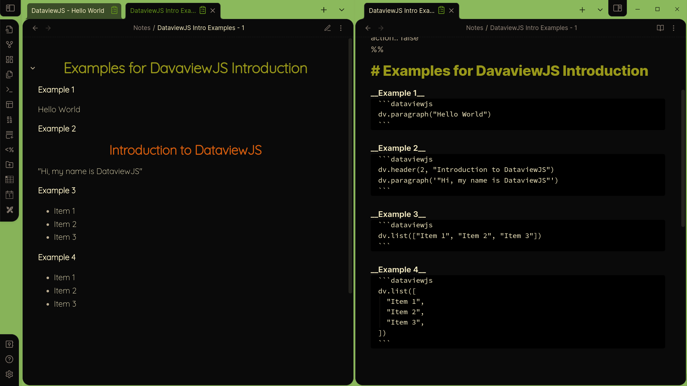
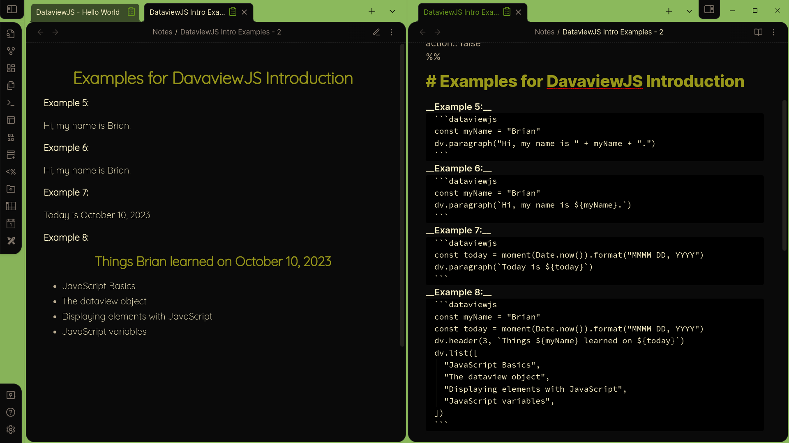

DataviewJS: A Gentle Introduction
This article is intended for people who are new to programming, but can serve as a jumping off point for experienced programmers new to JavaScript in general or DataviewJS in particular. The documentation can be found here.
You may be asking yourself, “Why learn JavaScript since I have Dataview queries to make lists and tables with my data”? You need JavaScript if, for example, you want interactive tables which allow you to edit data directly from the table without opening the associated note (very important in an information-first, NoSQL style). Or if you want to work with relative dates, eg. “last week”, without needing to update your queries every week. JavaScript allows you to show things like totals, counts and averages together with your tables. And since you are writing JavaScript anyway, you can fully customize the way everything is displayed.
JavaScript may seem intimidating, but it’s really not too complex or complicated for what we need to do in Obsidian. The basic examples I start with here won’t display any tables, but will get you comfortable with some of the basic concepts and how to write simple JavaScript code. It is very important that you do these examples yourself in your own vault. Like any language, the only way to learn it is to use it (and make mistakes).
JavaScript
JavaScript is a general purpose programming language not unlike Python, but quite different from the confusingly-named Java programming language to which it bears no relation. It is responsible for most of the dynamic content on the internet. As happens with human languages spoken widely, JavaScript has evolved a variety of “regional dialects”, sharing a common grammar and basic lexicon, but adding words and idioms to work in specific environments. DataviewJS is one such dialect, one which provides a vocabulary specifically tailored for Obsidian. It does this by giving us a Dataview object, but more on that later.
This will be a learn-by-example sort of thing, but it’s worth mentioning a few things up front for those totally new to this. In JavaScript, spaces, tabs and line breaks don’t matter. You could write your script on one line, but that would be silly. I suggest that you use spaces and line breaks liberally, because it will make your code much easier to write, read and quickly understand when you look back at it later. You will also see some people using semi-colons at the end of lines. This, too, is optional. Finally, variables can be named however you like, but the convention for multi-word variables is to capitalize the first letter of every word except the first, like theVariableName.
(Fun fact: this naming convention is called “camel case”, with the capital letters seen as humps protruding from the back of a camel. Two humps can be seen in one form, CamelCase. The form used in JavaScript, camelCase is specifically called “dromedary case” for apparent reasons.)
One thing about JavaScript which took me a while to get used to at first was all of the curly braces ({}). All that they indicate is that there is a block of JavaScript code inside, usually with multiple lines. While we’re on the subject of braces, the square brackets ([]) are used when you want a list of things. Just separate each item by commas, and put quotations around each item, like ["Item 1", "Item2"]. You often want to go through lists item by item (a process called iteration), and we will see later how to do this. Apostrophes (') and quotations (") can be used interchangeably to wrap text. Don’t worry, we’ll go over all this later.
Hello World
The first program you traditionally write in any programming language is “Hello World”, which displays, not unsurprisingly, “Hello World” as output. Here is such a one in DataviewJS:
dv.paragraph("Hello World")The output looks like this:
Hello WorldYeah! You are now a JavaScript programmer! This simple example introduces some important concepts, though.
First, when you want to write some JavaScript, you must use a code block with the key word dataviewjs. While you are writing code, it can be convenient to start the code block with js dataviewjs rather than simply dataviewjs. You will get nice syntax highlighting that way, and can simply remove the first js when you want to run your code.
As you might have guessed, paragraph just means to display the text in parentheses as a paragraph. Technically, dv.paragraph() is a command, or function, and the part in parentheses is called the arguments. Note the quotations surrounding the text.
So what’s this dv thing? Remember when I said that each flavor of JavaScript provides special vocabulary for it’s context? They do this typically by providing an “object” containing the functionality. dv is what is called the Dataview object, and anytime you want to access the functionality of DataviewJS you indicate that by starting your statement or phrase with dv followed by a period. Since displaying a paragraph on a page of markdown is specific to DataviewJS, we write dv.paragraph()
In addition to paragraphs, the dv object allows us to display headers, lists, tables, etc. In fact, the dv object can display any HTML element. You can display multiple elements by putting them one after another in your code.
Let’s look at another example:
dv.header(2, "Introduction to DataviewJS")
dv.paragraph('"Hi, my name is DataviewJS"')Introduction to DataviewJS
Hi, my name is DataviewJS
Since it’s hard to show the result naturally, I’ve included screenshots from my vault with the code on the right and the results on the left.

Here I’m displaying 2 elements. Headers require two arguments, the first indicating the header level. This example is the same as writing ## Introduction to DataviewJS. Note that we don’t use quotations around numbers (usually). The dv object also allows us to display lists, like this:
dv.list(["Item 1", "Item 2", "Item 3"])Remember that, when making lists in JavaScript, you use the square brackets and separate each item with a comma. This is also called an array. This is a pretty simple example, but sometimes things get a lot more complicated, and since spaces and new lines don’t matter, it is good practice to write the same code like this:
dv.list([
"Item 1",
"Item 2",
"Item 3",
])This makes it much easier to see what is going on, and also makes copying and pasting of individual items easier, too.
Variables
Well, you may not be too impressed so far. Nothing we’ve done yet has been anything we couldn’t have done by simply writing the markdown. Things get more interesting when we start using variables. These allows us to create and manipulate information before displaying it. Variables are usually made (declared) with either const or let in JavaScript. So const myName = "Brian" creates a variable called myName with the value of “Brian”. We can then write this:
const myName = "Brian"
dv.paragraph("Hi, my name is " + myName + ".")which produces
Hi, my name is Brian.When used with text, called strings in coding lingo, the + puts together (concatenates) multiple strings. You can see that a long string with multiple variables could start to look messy. A more convenient way to combine text and variables is to use back ticks instead of quotes, and put the variable names in curly braces preceded with the dollar sign. So instead we can write:
const myName = "Brian"
dv.paragraph(`Hi, my name is ${myName}.`)to get the same result.
You could still object, no pun intended, that we haven’t done anything we couldn’t have done just by writing out the sentence. We’ll get to that in the next article, but before closing this one, I’ll show you something you can only do with JavaScript. DataviewJS comes with another JavaScript flavor baked in called MomentJS. Like DataviewJS provides a dv object, MomentJS provides a moment object which makes it easy to work with dates and times. We’ll talk a lot more about this later, but for now you can use it like this:
const today = moment(Date.now()).format("MMMM DD, YYYY")
dv.paragraph(`Today is ${today}`)Today is October 10, 2023This display’s today’s date in a format specified by argument to the format() function. Every time you open a note or canvas, the current day will be displayed.
Putting it all together, we can write
const myName = "Brian"
const today = moment(Date.now()).format("MMMM DD, YYYY")
const learnings = [
"JavaScript basics",
"The dataview object",
"Displaying elements with JavaScript",
"JavaScript variables",
]
dv.header(3, `Things ${myName} learned on ${today}`)
dv.list(learnings)to produce
Things Brian learned on October 10, 2023
- JavaScript basics
- The dataview object
- Displaying elements with JavaScript
- JavaScript variables

Next steps
In the next article I’ll start looking at using DataviewJS to make lists and tables and otherwise use the information in your vault. Meanwhile, if you want to learn more about working with dates, you can visit the Moment.js website. And the DataviewJS documentation can be found here. Happy coding!